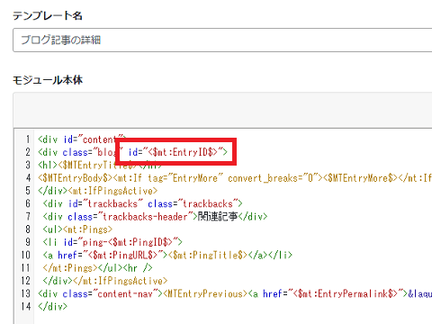
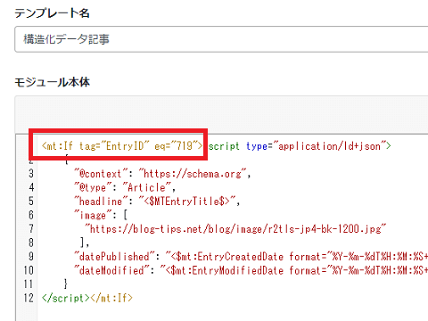
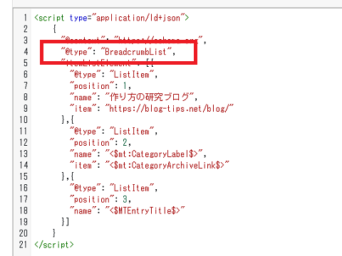
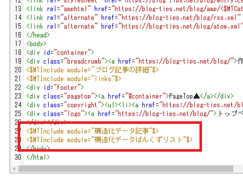
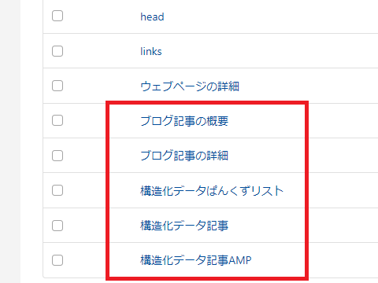
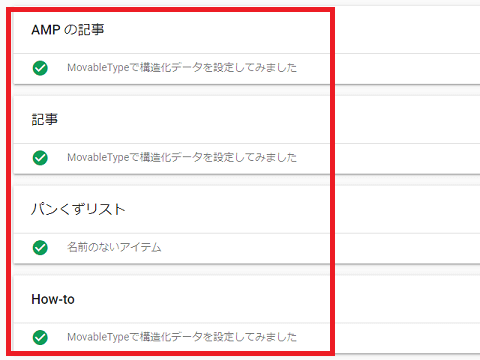

MovableTypeで構造化データを設定してみました
当ブログではMovableTypeを使用していますが、MTブログでjsonの構造化データを設定してみました。
構造化データのうち、「ぱんくずリスト」については全ページ一律で設定できるため、比較的簡単に対応できると思います。
一方、「記事タイプ」や「HowTo」については、画像の有無やコンテンツの性質によって個別に違いが出てきます。
当ブログでは画像を使用していない記事もあるため、全ページを一律で記事（Article）タイプの構造化データを設定するわけにもいきません。また、記事タイプでは1200px以上の画像が必要とのことで、小さい画像を掲載しているページについても対応が難しいです。
そのため、記事番号（EntryID）を割り振って場合分けをし、１番の記事ならArticleのjsonを表示、２番の記事ならHowToのjsonを表示、３番の記事はjsonなし...などといった形で個別に対応するのがよいと思います。
<mt:If tag="EntryID" eq="1">
Article構造化データ
</mt:If>
<mt:If tag="EntryID" eq="2">
HowTo構造化データ
</mt:If>
上記のような「テンプレートモジュール」を作成し、body終了タグの直前にでも設定しておくとよいでしょう。
構造化データ化する際の手順
実際に作成する際、以下の手順で対応するとよいでしょう。
①記事番号の出力
まず、「ブログ記事の詳細」の適当な箇所に、<$mt:EntryID$>を記載して記事番号を表示させます。
<article id="<$mt:EntryID$>">

この番号を元に上記の記事番号による場合分けをしていきます。
②「テンプレートモジュール」で「記事構造化データ」を作成
テンプレートモジュールで適当なものを複製し、上記のようなEntryIDによる場合分けの内容に書き変えます。名前は何でも良いと思います。
例えば、こちらの場合、エントリーナンバー719番の記事に適用する構造化データの内容になります。

記事タイプの場合、日付のフォーマットは「ISO 8601」ですが、MTタグのformatの場合、utc="1"を取れば、日本時間で表示されるはずです。こちらの画像では見切れてしまいましたが、最後のzは日本時間の+09:00にしておけばよいと思います。
③「ぱんくずリスト構造化データ」の作成
ぱんくずリストについては、実際のぱんくずリストの箇所のタグを参考にしながら作成すれば、普通に出力されるはずです。

④「body」タグの直前に上記の構造化データを設定
ブログ記事のテンプレートなどで、「body」タグの直前に②と③の構造化データを設定しておきます。

⑤AMP用の構造化データも別途に作成
AMPページも作成している場合、同様の手順でAMP用のテンプレートにも設定しておきます。
結局、当ブログでは以下のような形になりました。

⑥リッチリザルトテストでチェック
完了しましたら、再構築をしてデータを反映させ、リッチリザルトテストでチェックするとよいでしょう。
ちなみに、このページについては「記事」と「ぱんくずリスト」、「ハウツー」を設定してみました。

上記のような方法の場合、いずれ「記事構造化データ」のテンプレートの行数が長くなっていくはずですが、「記事構造化データその１」、「記事構造化データその２」などとわけて記載していけば、対応できると思います。